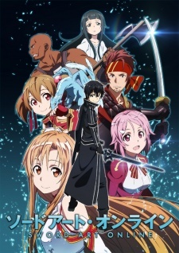
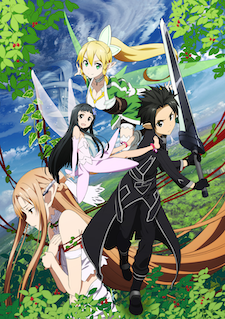
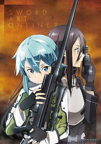

Недалёкое будущее. К 2022 году технологии достигли такого уровня, что сделали возможным Полное Погружение — блокировку информации, поступающей к мозгу от всех пяти органов чувств, перехват сигналов, идущих от мозга к телу и замена этих сигналов «фальшивыми» — сгенерированными компьютером. Полное Погружение было в первую очередь использовано в индустрии компьютерных игр, поскольку позволяло полностью переключить сознание игрока на виртуальный игровой мир.
Sword Art Online (SAO) стала первой выпущенной на рынок VRMMORPG — Virtual Reality Massively Multiplayer Online Role-Playing Game (Массовая многопользовательская онлайн-игра c полным погружением). Виртуальная игровая среда, разработанная компанией «Аргус», представляла собой колоссальную сто уровневую крепость Айнкрад, парящую в небесах.  Первый же день игры после двух месяцев бета-тестирования обещал стать событием в мире игровой индустрии и действительно стал им… однако совсем не таким, как хотелось бы общественности и тем более пользователям этой игры. Десять тысяч игроков, вошедших на сервер SAO, внезапно обнаружили отсутствие кнопки «Выйти из системы» в системном меню. Последовавшее позднее объявление от создателя технологии Полного Погружения игры Sword Art Online Акихико Каябы превзошло самые худшие предположения — пользователи были намеренно лишены возможности покинуть виртуальный мир до тех пор, пока кем-нибудь из игроков не будет покорён сотый уровень Айнкрада. Более того — попытка снять шлем виртуального погружения кем-нибудь в реальном мире (ни один из пользователей не смог сделать этого самостоятельно: погружённый в «виртуальность» в реальности не может пошевелить даже пальцем), приводит к мгновенной смерти в результате микроволнового разряда в мозг. И самое худшее — смерть игрового персонажа в виртуальной среде приводит к самой настоящей смерти игрока в реальном мире. Таким образом, десять тысяч человек оказались поставлены перед нелёгким выбором: пройти игру от начала до конца, постоянно рискуя жизнью в схватках с монстрами либо остаться в безопасных зонах, предоставив «играть» другим — сражаться и умирать, один за другим штурмуя уровни крепости Айнкрад. Кадзуто "Кирито" Киригая, игрок-одиночка — один из тех, кто участвовал в закрытом бета-тестировании игры Sword Art Online. Будучи заядлым фанатом компьютерных игр, он оказался в числе десяти тысяч человек, вошедших на сервер SAO в первый день игры и одним из тех, кто оказался в ловушке игрового мира. Приняв решение участвовать в прохождении игры, Кирито, тем не менее, остаётся одиночкой, лишь иногда присоединяясь к другим игрокам, объединившимся в Гильдии — группы, поставившие перед собой цель пройти игру до самого конца. Кирито является одним из игроков высокого уровня, развивающим для своего персонажа искусство одноручного меча и, как выясняется по мере развития событий, уникальный навык «Двух мечей». У Кирито есть веские причины избегать близких связей с людьми — исключение составляют только его отношения с первым заместителем главы гильдии "Рыцари Крови" — Асуной.
После того, как Кадзуто смог досрочно завершить игру Sword Art Online, все оставшиеся в живых игроки покинули виртуальный мир Айнкрада… почти все. Триста игроков, среди которых оказалась и возлюбленная Кирито — Асуна, так и не смогли выйти в реальный мир. Индикаторы их шлемов Нервной Передачи (виртуального погружения) по-прежнему показывали, что пользователь присоединён к виртуальному миру, несмотря на то, что сервер игры SAO давно отключен. Несколько месяцев спустя Кадзуто получает от друга скриншот из новой VRMMORPG-игры — Alfheim Online (ALO). На изображении — гигантское подобие золотой птичьей клетки с заключённой внутри девушкой, слишком похожей на Асуну, чтобы быть простым совпадением. Новая игра, Alfheim Online, как следовало из названия, представляла собой «Дом эльфов» — виртуальный мир, населённый вымышленными расами существ, позаимствованными из скандинавской мифологии — сильфами, спригганами, кайт ши, ундинами и др. Цель игры — покорить Иггдрасиль, Мировое Дерево. Где-то на вершине этого дерева и находится золотая клетка с заключённой в ней Асуной. Кирито вновь отправляется в виртуальный мир, твёрдо намеренный освободить её.
После истории с Айнкрадом, программный пакет «Семя Мира», подаренный Кирито Акихико Каябой стал доступен всем желающим, индустрия VRMMORPG-игр, изрядно потрясённая скандалами с SAO и ALO, обрела новую жизнь. Теперь создание виртуальных миров стало доступно сравнительно небольшим компаниям — разработчикам игр и даже сообществам самих игроков. Благодаря их усилиям, удалось сохранить ALfheim Online, едва не закрытую после раскрытия жуткой правды, спрятанной на вершине Иггдрасиля; более того, в виртуальных небесах «мира фей» появилась парящая крепость Айнкрад, восстановленная из остатков данных, найденных в памяти игрового сервера компании «Аргус». Появились также большое количество других VRMMORPG-игр — одна из них, Gun Gale Online (GGO), была сделана для игроков, развивающим владение огнестрельным оружием. Вот только «Game Over» в этой игре мог закончиться настоящей смертью в реальном мире — несколько лучших игроков GGO были найдены мёртвыми в собственных домах. Чтобы узнать, что происходит, Кадзуто отправляется в совершенно незнакомый ему виртуальный мир, где все решает не владение «мечом и магией», а умение быстро стрелять и попадать в цель. Ему нужно найти того, кто, возможно, умеет убивать выстрелом из игрового оружия — игрока, называющего себя «Death Gun».
Кадзуто по совету Кикуока Сэйдзиро (руководитель проекта) подрабатывает в компании RATH и сам того не понимая, участвует в секретном правительственном проекте «Алисизация». Проект «Алисизация» — секретный правительственный проект, цель которого — повысить обороноспособность страны. Проект «Алисизация» использует принципиально новую форму технологии Полного Погружения — Транслятор души. (англ. Soul Translator (STL). В отличие от всех предыдущих виртуальных миров (SAO, ALO, и GGO), виртуальный мир проекта «Алисизация» Подмирье (ориг. Underworld — сокр. от Underground World) не является развлекательной игрой. За три дня погружения в мире Подмирья, Кадзуто проживает внутри него 10 лет своей альтернативной жизни с самого рождения, но по возвращению в реальность память об этом не сохраняется. После этого его смертельно ранит Джонни Блэк, последний член бывшей красной гильдии «Смеющийся гроб». Кикуока решает отправить Кадзуто обратно в Подмирье, так как это единственная возможность восстановить повреждённый мозг Киригая. На этот раз Кирито помнит настоящего себя, но в его памяти лишь обрывками всплывают воспоминания альтернативной жизни, в которой у него были друзья детства — Юджио и Алиса.
Прошел месяц после возвращения Кирито и Асуны из подмирья. Обретя физическое тело в реальном мире Алиса так же живет с ними. Однако их спокойной жизни настал конец. Все трое были втянуты в таинственную игру под названием Unital Ring. Это была созданная на основе "Семени", путем слияния всех других VRMMO игр, MMO игра на выживание. Потеряв все свое драгоценное снаряжение в самом начале игры, Кирито остается в одних трусах. В таких ужасных обстоятельствах принимает вызов VRMMOSVG, окутанной тайнами.
Кирито, Чёрный мечник / Битер (объединение двух терминов бета-тестер + читер) / Кадзуто Киригая (яп. キリト / 桐ヶ谷 和人 Кирито / Киригая Кадзуто) — центральный персонаж истории, от лица которого чаще всего ведётся повествование. Впервые сыграл в Sword Art Online в возрасте четырнадцати лет (когда участвовал в закрытом бета-тестировании игры). Благодаря участию в бета-тесте SAO, Кирито, удалось получить начальное преимущество, перед другими игроками, в развитии своего персонажа. А позднее, уже благодаря отточенным умениям и сноровке, стать самым сильным игроком SAO. Кадзуто в совершенстве владеет одноручным мечом. Он постоянно носил одежду чёрного цвета, которая обладала высоким игровым потенциалом к скрытности (из-за чего, кстати, и получил своё прозвище — Чёрный мечник). Кроме того, Кирито является обладателем уникального навыка «Два клинка», который, по заявлению Каябе Акихико, предназначался игроку с самой быстрой реакцией. Данным навыком он пользуется лишь в чрезвычайных ситуациях, не желая привлекать к себе излишнее внимание других игроков. Кирито - "Соло-игрок" (человек играющий в одиночку и зачастую избегающий всяческих контактов с остальными игроками), однако, он изредка присоединяется к "пати" (командной игре), например для уничтожения босса этажа. Является почётным членом "Проходчиков" (тех немногих, но очень сильных игроков, что желают поскорее положить конец кошмарам SAO). Состоит в очень хороших отношениях с Асуной, которая в последствии станет его возлюбленной, а чуть позже — женой. Ближе к концу ветки "Айнкрад", был вынужден присоединиться к Гильдии — "Рыцари Крови".
В реальном мире, Кадзуто Киригая живёт со своей тётей (приёмной матерью) и двоюродной сестрой. Настоящие родители Кадзуто погибли в результате несчастного случая, когда ему было около одного года. После событий Sword Art Online, занимается исследованием технологии "Полного Погружения". В будующем желает стать разработчиком технологий взаимодействия с виртуальной реальностью, а также развивать и улучшать уже имеющиеся.
Сэйю: Ёсицугу Мацуока
Асуна, Молния / Асуна Юки (яп. アスナ / 結城 明日奈 Асуна / Ю:ки Асуна) — одна из немногих игроков, использующих в онлайн-игре своё настоящее имя. Примерно на год старше Киригая. Первый заместитель главы Гильдии "Рыцарей Крови". Очень красивая и эффектная девушка, благодаря чему у неё всегда много поклонников, а также тайных и явных «воздыхателей». Одна из сильнейших игроков в SAO, мастер владения рапирой. Из-за невероятной скорости и точности своих атак получила прозвище "Молния".
В реальности Асуна — дочь президента крупной японской корпорации "Ректо". Находясь всегда под давлением высоких ожиданий со стороны родителей, Асуна предпочитала уклоняться от принятия самостоятельных решений, полностью подчиняясь воле отца. Однако, оказавшись в рядах заложников Sword Art Online, Асуна решила пересмотреть своё отношение к жизни. Поэтому она не стала отсиживаться в "Безопасной зоне", а решила сражаться, впоследствии пополнив ряды отважных войнов "Переднего края" (место где "Проходчики" в данный момет "пробиваются" на следующий этаж Айнкрада).
Сэйю: Харука Томацу
Лифа / Сугуха Киригая (яп. リーファ / 桐ヶ谷 直葉 Ри:фа / Киригая Сугуха) — двоюродная сестра Кирито / Кадзуто Киригая, родная дочь его тёти, Мидори. С ранних лет занимается кэндо, в чём достигла больших успехов. После того, как Кадзуто оказался в ловушке SAO, чтобы лучше понять, что испытывает сейчас её брат, сама начала играть в VRMMORPG ALfheim Online под именем Лифа, выбрав для своего игрового персонажа расу сильф. Во время игры случайно встречает сприггана по имени Кирито, не подозревая, что тот на самом деле является Кадзуто и вызывается помочь ему достичь Иггдрасиля. Испытывает к Кадзуто и к его альтер эго в игре — Кирито — противоречивые запретные чувства, далёкие от сестринских.
Сэйю: Аяна Такэтацу
Синон / Асада Сино (яп. シノン / 朝田 詩乃 Синон / Асада Сино) — один из ключевых персонажей арки GGO, девушка-снайпер. Стала игроком Gun Gale Online по совету своего друга, чтобы побороть последствия детской психологической травмы, связанной с огнестрельным оружием. Владелец редкого игрового оружия — снайперской винтовки PGM Ultima Ratio Hecate II, из-за которой получила своё прозвище. В реальном мире — ученица старшей школы.
Сэйю: Миюки Савасиро
Кляйн (Малой) / Рётаро Цубои (яп. クライン / 壷井 遼太郎 Курайн / Цубои Рё:таро:) — друг Кирито, с которым они познакомились в первый день игры в SAO. Лидер Гильдии «Фуринкадзан»[6], состоящей преимущественно из тех, с кем Кляйн был знаком ещё до игры. Излюбленное игровое оружие — катана.
Сэйю: Хироаки Хирата
Эгиль / Эндрю Гиллберт Миллз (яп. エギル / アンドリュー・ギルバート・ミルズ Эгиру / Андору: Гируба:то Мирузу) — друг Кирито, темнокожий лысый мужчина, владеющий лавкой. В реальном мире — владелец кафе «Кости», которым во время событий в Айнкраде управляла его жена. Впоследствии его кафе стало частым местом встреч Кирито и его друзей. Излюбленное игровое оружие — топор.
Сэйю: Хироки Ясумото
Силика / Кэйко Аяно (яп. シリカ / 綾野 珪子 Сирика / Аяно Кэйко) — персонаж побочной истории «Чёрный мечник» из арки SAO, также является одним из действующих лиц арок ALO и GGO. В реальном мире — девочка четырнадцати лет. Игрок среднего уровня, развивающая навык кинжала. Благодаря прокачанности таланта приручительницы смогла вступить в союз с игровым монстром — «Пернатым драконом», которому дала имя Пина. Но позже, монстр погиб в бою. Помочь взялся Кирито, для чего ему пришлось за несколько дней прокачать Силику до уровня, достаточного, чтобы та смогла воскресить Пину. Истинным намерением Кирито было поймать на живца и ликвидировать группу убийц игроков под руководством Розалии.
Сэйю: Рина Хидака
Лизбет / Рика Синодзаки (яп. リズベット / 篠崎 里香 Ридзубэтто / Синодзаки Рика) — персонаж побочной истории «Тепло сердца» из арки SAO, также является одним из действующих лиц арок ALO и GGO. В SAO развивала навык кузнеца-оружейника, благодаря чему познакомилась с Асуной, которая стала её лучшей подругой. С её наковальни сошли как рапира Асуны, так и меч Кирито. Во время поиска металла для меча Кирито, влюбилась в него, но, поняв что Асуна также питает к нему чувства, отказалась от своих притязаний на Кирито.
Сэйю: Аяхи Такагаки
Юи (яп. ユイ) — искусственный интеллект, одна из вспомогательных программ управления Sword Art Online. Полное наименование — англ. Mental Health Counselling Program (MHCP), «Программа защиты психического здоровья», кодовое имя «Юи». Изначально была предназначена для психологической помощи игрокам SAO. Для общения с людьми, нуждающимися в поддержке, Юи была придана внешность десятилетней девочки. После того, как Sword Art Online превратилась в «игру на выживание», от основной управляющей программы SAO, «Кардинал», Юи поступил запрет на любое вмешательство или контакты с игроками (что изначально было её основной функцией). Два года Юи ощущала через шлемы Нервной передачи страдания, гнев и страх игроков, будучи не в силах чем-нибудь помочь им. В итоге Юи, по её собственному выражению, «сломалась» — частично утратила память и дар речи. В побочной истории арки SAO — «Девочка утренней росы» знакомится с Кирито и Асуной и становится для них своего рода приёмной дочерью. В то время, как программа «Кардинал» стирала Юи, Кирито удалось переместить её в локальную память своего шлема Нервной Передачи в виде, пригодном для дальнейшей реанимации (см. серию «Сердце Юи»). Называет Кирито и Асуну «папой» и «мамой», постоянно бранит Кирито, когда, по её мнению, тот слишком близко контактирует с другими женщинами (за исключением Асуны и Сугухи). Является также персонажем арок ALO и GGO, приняв в игре ALfheim Online образ маленькой феи-пикси